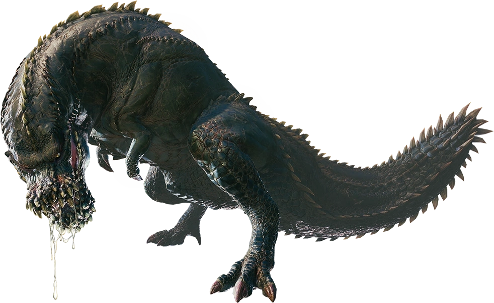
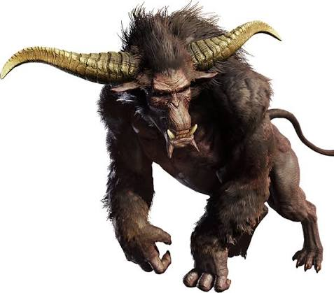

Deviljho
Deviljho is a massive and extremely aggressive monster known for its endless hunger and destructive nature. With its powerful jaws, muscular body, and deadly Dragon-element breath, it can overpower both hunters and other large monsters. It constantly wanders in search of food, attacking almost anything in its path. Its unpredictable behavior and overwhelming strength make Deviljho one of the most feared predators hunters can encounter.

Rajang
Rajang is a powerful and highly aggressive monster known for its incredible strength and speed. With its muscular body, sharp horns, and powerful fists, it can deliver devastating attacks even against much larger monsters. When enraged, Rajang's fur turns golden and its power increases dramatically, making it even more dangerous. Its unpredictable nature and explosive attacks make encountering a Rajang a serious challenge for any hunter.

Bazelgeuse
Bazelgeuse is a large flying wyvern known for its explosive scales and destructive nature. It drops these volatile scales from its body while flying, creating powerful explosions that can catch hunters off guard. It often invades the territory of other monsters, turning fights into chaotic battles. Its aggressive behavior, aerial attacks, and explosive scales make Bazelgeuse one of the most dangerous monsters to encounter unexpectedly.